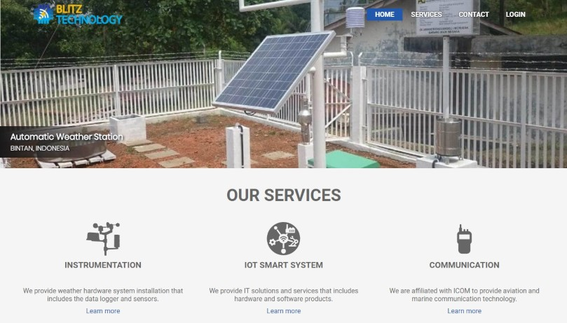
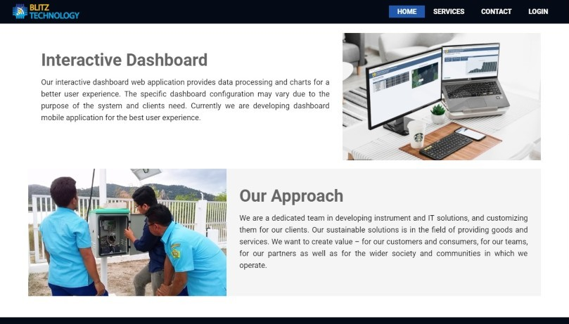
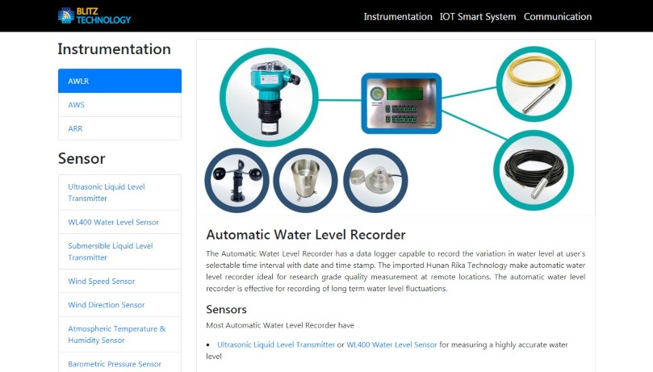
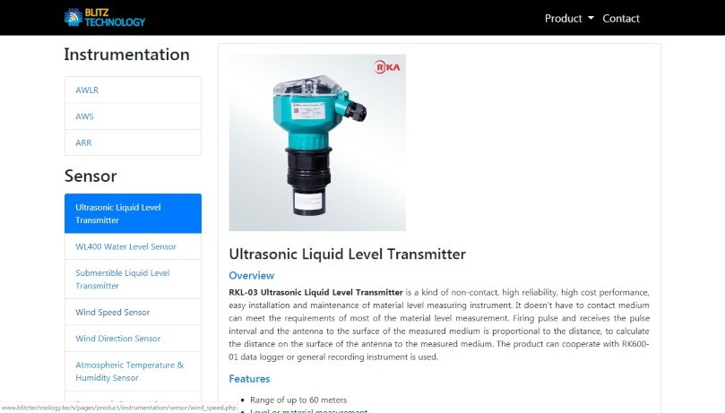

Blitz Technology




Blitz Technology provides weather system installation includes data logger, sensors and custom dashboard based on client needs. Vanilla JavaScript site to introduce business services.